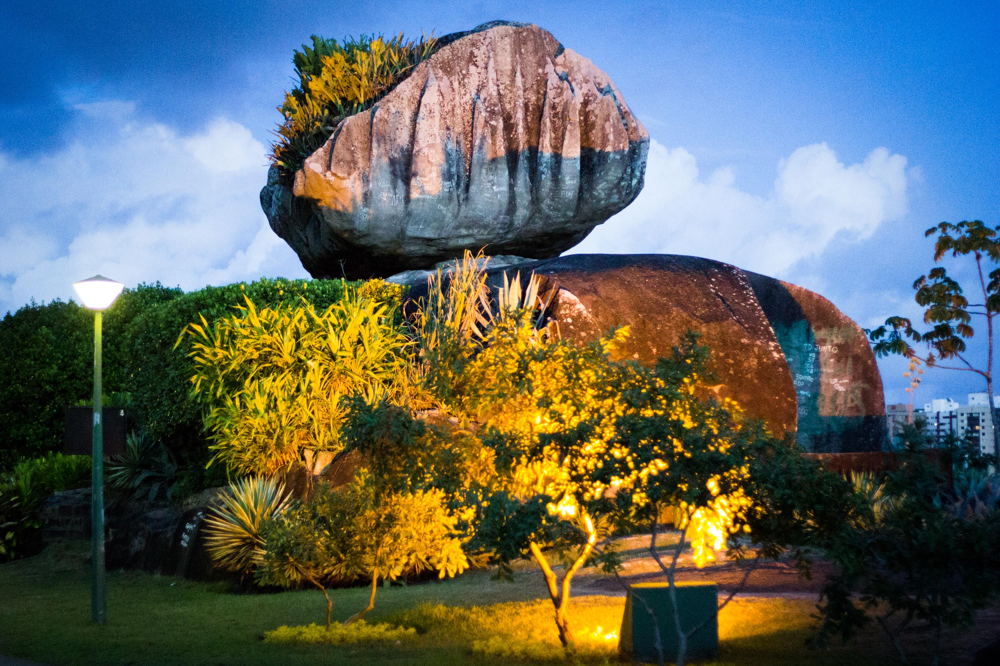

<ion-header [translucent]="true">
  <ion-toolbar color="success">
    <ion-title>
      Parques do Espírito Santo
    </ion-title>
  </ion-toolbar>
</ion-header>

<ion-content [fullscreen]="true">
  <ion-list>
    <ion-item [routerLink="['/pedradacebola']">
    <ion-thumbnail slot="start">
      
    </ion-thumbnail>
    <ion-label>
      <ion-text color="tertiary">
        <h2>Pedra da Cebola</h2>
      </ion-text>
      <ion-badge color="danger" slot="end">Vitória</ion-badge>
    </ion-label>
    <ion-icon name="chevron-forward-outline" slot="end"></ion-icon>
    </ion-item>
  </ion-list>
  
</ion-content>
